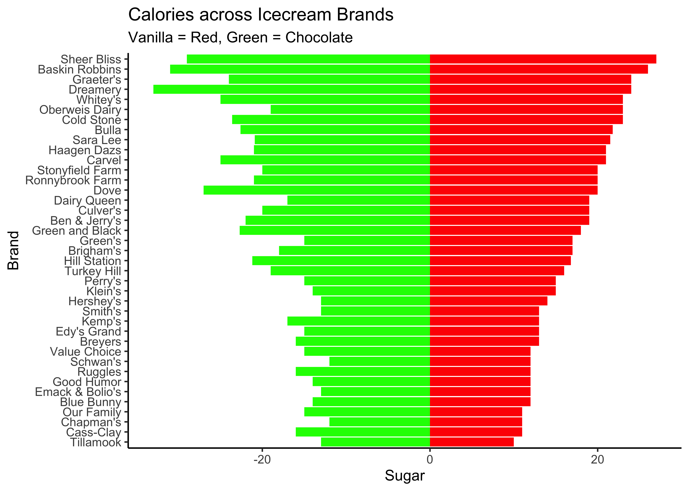

```{r}
#| label: setup
#| include: true
library(tidyverse)
library(mosaic)
library(resampledata)
```Tutorial on Inference for Two Paired Means
What is there to not like about icecreams!! Here is a dataset that has data on Sugar and Calories between Vanilla and Chocolate icecreams, across several brands of icecreams. Is this a sample of paired data? Let us check:
```{r}
#| layout-nrow: 2
data("IceCream")
IceCream
inspect(IceCream)
```
categorical variables:
name class levels n missing distribution
1 Brand factor 39 39 0 Baskin Robbins (2.6%) ...
quantitative variables:
name class min Q1 median Q3 max mean sd n
1 VanillaCalories integer 120.0 140.0 160 240.0 307 191.41026 58.644207 39
2 VanillaFat numeric 4.5 7.5 9 15.5 21 11.28718 4.431655 39
3 VanillaSugar numeric 10.0 12.5 17 21.0 27 17.13077 4.841333 39
4 ChocolateCalories integer 120.0 140.0 170 260.0 320 198.74359 63.063342 39
5 ChocolateFat numeric 5.0 7.5 9 14.7 21 11.12051 4.597378 39
6 ChocolateSugar numeric 12.0 15.0 18 22.3 33 18.97436 5.402812 39
missing
1 0
2 0
3 0
4 0
5 0
6 0Hmm…the data are about calories, fat, and sugar between two flavours of icecream sold by each brand. There are 39 brands.
Let us plot the data first:
```{r}
#| layout-ncol: 3
IceCream %>%
gf_col(fct_reorder(Brand, VanillaCalories) ~ VanillaCalories,
fill = "red") %>%
gf_col(fct_reorder(Brand, VanillaCalories) ~ - ChocolateCalories,
fill = "green",
xlab = "Calories", ylab = "Brand",
title = "Calories across Icecream Brands",
subtitle = "Vanilla = Red, Green = Chocolate") %>%
gf_theme(theme_classic())
IceCream %>%
gf_col(fct_reorder(Brand, VanillaFat) ~ VanillaFat,
fill = "red") %>%
gf_col(fct_reorder(Brand, VanillaFat) ~ - ChocolateFat,
fill = "green",
xlab = "Fat", ylab = "Brand",
title = "Calories across Icecream Brands",
subtitle = "Vanilla = Red, Green = Chocolate") %>%
gf_theme(theme_classic())
IceCream %>%
gf_col(fct_reorder(Brand, VanillaSugar) ~ VanillaSugar,
fill = "red") %>%
gf_col(fct_reorder(Brand, VanillaSugar) ~ - ChocolateSugar,
fill = "green",
xlab = "Sugar", ylab = "Brand",
title = "Calories across Icecream Brands",
subtitle = "Vanilla = Red, Green = Chocolate") %>%
gf_theme(theme_classic())
```


We may hypothesize that say, the fat content in the two flavours might be similar on a per brand basis. That is, if say Baskin Robbins has high sugar in the vanilla flavour, it is likely to have high sugar also in its chocolate flavour.
Let us see what are the observed differences in the mean values of calories, sugar, and fat across brands:
```{r observed-statistic-verizon}
IceCream %>%
mutate(diff_calories = VanillaCalories - ChocolateCalories,
diff_fat = VanillaFat - ChocolateFat,
diff_sugar = VanillaSugar - ChocolateSugar) %>%
summarise(mean_diff_calories = mean(diff_calories),
mean_diff_fat = mean(diff_fat),
mean_diff_sugar = mean(diff_sugar))
```Hmm…while the numbers showing difference in means are quite different, we need to perform tests to infer whether these difference are statistically significant.
How do we specify our Hypotheses? (Of course, there is more than one!)
Write the Null and Alternate hypotheses here.
How do we compute the NULL distributions, for each of the three components of the ice creams, using pair-wise analysis?
So are there significant differences in sugar, fat, and calorie content across the two flavours?
Is this conclusion different if you don’t use paired-data, and just treat the data as independent readings?